peru
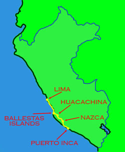
along the coast to lima
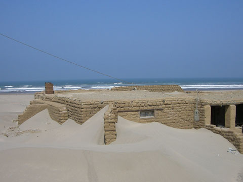
peru has had some serious bad weather in the past with some people are still cleaning up from the last big storms.
chauchilla cemetry
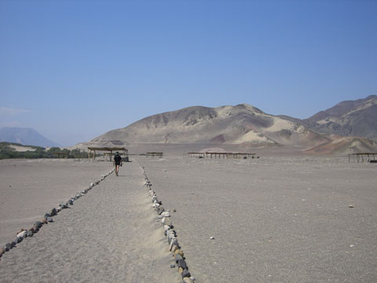
chauchilla is a thousand year old cemetry in the middle of nowhere. well, just south of nazca anyway. these little roofs cover burial chambers scattered around the place.
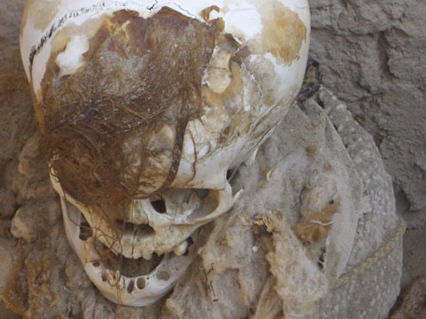
the extreme dry has kept the mummies in very good shape. the extreme greed of grave robbers means we can now see it all.
nazca
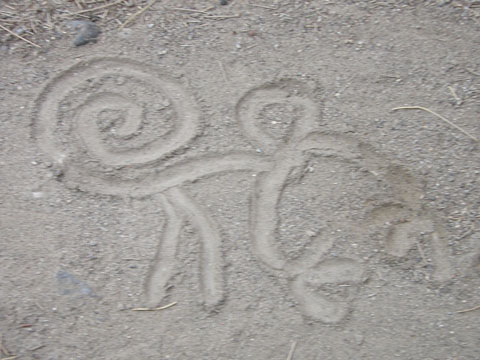
the amazing nazca lines. i don't knows why they were made, no one really does, but i do know they are pretty impressive. it's not just shapes of animals, the whole desert is crisscrossed with lines and shapes. strange.
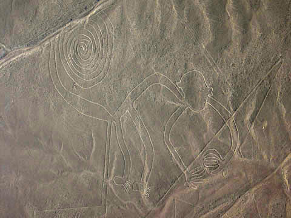
oops, wrong picture. here you go, much better.
huacachina
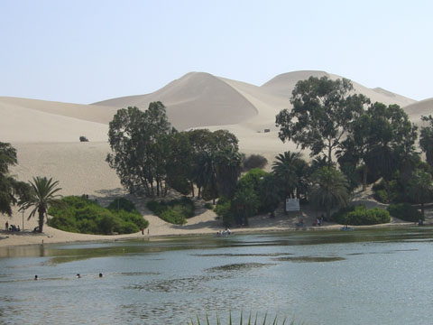
huacachina is a oasis near ica in some serious desert sand dunes. we went sand boarding and riding in these buggies. it was pretty cool.
ballestas islands
the ballestas islands are swarming with birds and seals. pretty much every bit of flat rock had a seal on it, i've never seen so many. this guy had been in the wars with half his face missing. looks like it was worth it though as he was surrounded by females. hubba hubba!
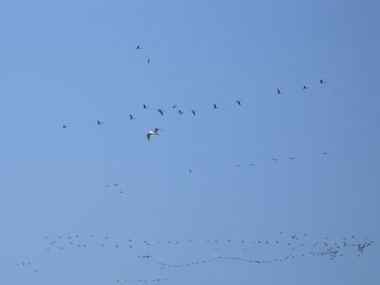
birds birds birds and more birds. filling the sky, all over the rocks, bobbing around in the water. our cat would have gone nuts
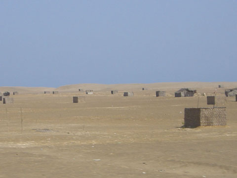
recently peru has gone through some land reform where people are given a block of land for free. the only catch is you have to build some kind of structure on it to keep it. every once in awhile we'd see hundreds of little building covering the desert. not once did i see a person though.
lima
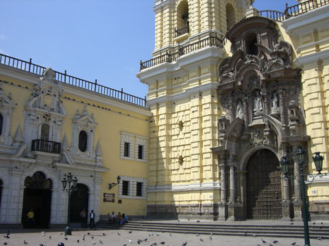
lima is the capital of peru with lots more plazas, cathedrals and fancy buildings.
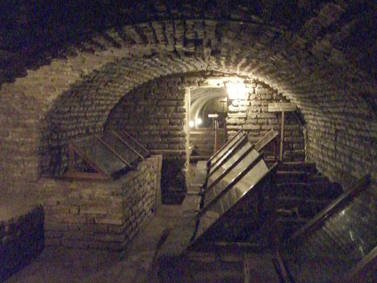
the above church had some creepy catacombs in it. it wasn't very busy and i was lucky to see only one other person. as i heard them coming i stood in a side passage and then stepped out in front of them as they passed. they totally freaked out; it was awesome.
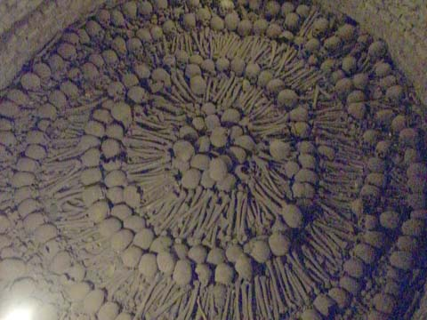
skulls, bones and more skulls. and not just sloppily piled up (like in some slacker catacombs) but instead daintily presented in concentric circles. how lovely!